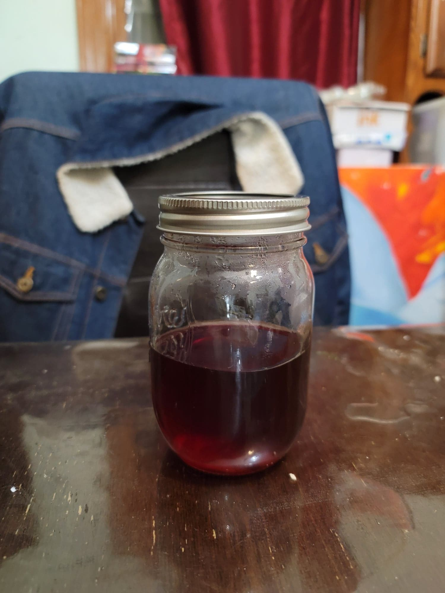

Rose Syrup

Ingredients:
- 40 g Dried rose petals or Dried rose buds
- 250 g Water
- 200 g Sugar
- Optional: Dried hibiscus, Diced beets, or Red/Pink food coloring
Instructions:
- Place the roses, water, and sugar into a saucepan and bring to a boil, stirring to completely dissolve the sugar.
- Reduce the heat to low. Let simmer uncovered for about 5 minutes. When there is about 2 minutes remaining, add in the coloring agent if using.
- Strain out all of the solids from the pot. Bring the liquid back to a simmer and then simmer over low for 10-15 minutes, or until it reaches a maple syrup consistency. Transfer into a glass container and store in the fridge after cooling.